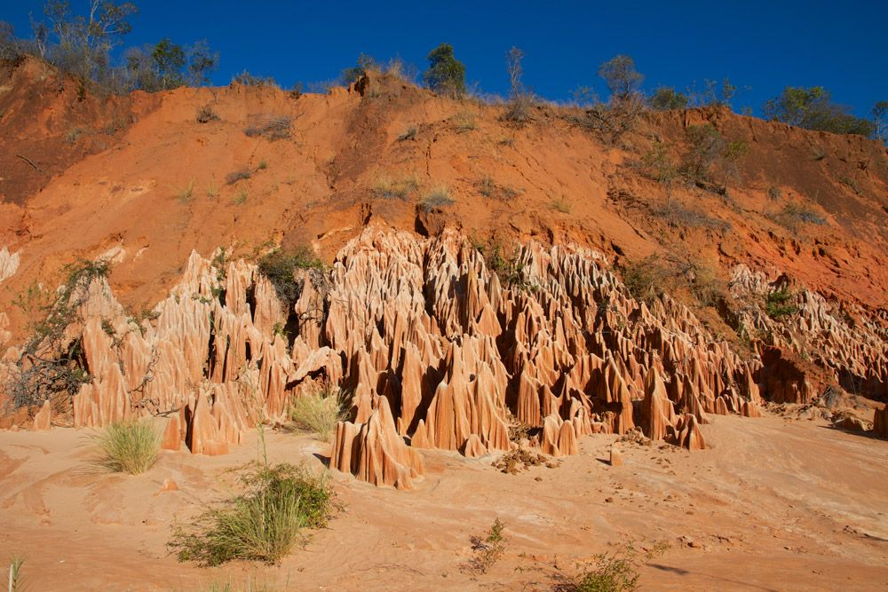

Itinéraire de voyage : A la découverte du grand Nord – MG 106
Madagascar : De Diégo Suarez aux Tsingy de l’Ankarana – 11 jours

Le pain de sucre (en Malgache, Soupari Dunghar !)
Dans cet itinéraire, nous allons découvrir les différentes facettes du nord de Madagascar.
Nous démarrons notre visite à l’extrême pointe nord du pays. La Montagne d’Ambre, cette presqu’île fertile est fascinante, car elle présente une diversité incroyable de paysages.
En chemin, nous apprécions les immenses plages de sable blanc, visitons l’étrange paysage de pierres des Tsingy. Puis les odeurs des plantations d’épices nous attirent et nous incitent à nous promener dans la fraîcheur de la forêt tropicale…
L’essentiel de ce circuit A la découverte du grand Nord de Madagascar :

Tsingy Rouge
- Tsingy Rouge et Tsingy de l’Ankarana
- Forêt tropicale et forêt sèche
- Diversité incroyable des paysages
Ce circuit est réalisable d’avril à décembre.
Téléchargez ici notre proposition de circuit et prenez contact avec Carole, notre collaboratrice pour la Suisse romande, qui se réjouit de vous renseigner.
Naturellement, cette proposition de circuit peut être adaptée à vos souhaits ou combinée avec d’autres itinéraires. Chaque voyage est planifié et organisé en étroite concertation avec vous. Contactez-nous à tout moment pour plus d’informations, planifier votre voyage ou pour toute question concernant Madagascar.